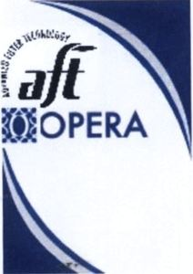

Trade Mark Journal No.2025/012 21 March 2025
WO0000001843984 (34)
Office of origin: Iran (Islamic Republic of)
Date of International Registration:21 January 2025
Date of designation in the UK:
21 January 2025

The word OPERA is in Latin and in blue. Above the word OPERA, the letters AFT and around it the words ADVANCED FILTER TECHNOLOGY are placed in a fancy black color. It has a gray color. Next to the word OPERA, there is a square shape inside it, an oval with blue circle borders, according to the example. The applicant has no exclusive right to use the words ADVANCED FILTER TECHNOLOGY.
ADVANCED FILTER TECHNOLOGY
The mark contains the colours blue, grey, white and black.
- Class 34
- Cigar cutters; herbs for smoking; chewing tobacco; all kinds of cigarettes; cigars; cigarette filters; matches; smokers (lighters for-).
Afra Ofogh Zhiar Co
Representative: ABARDAD International Law Office, No. 124, 5th Floor- Appt. no. 28, 1586636934 Tehran, IRAN (ISLAMIC REPUBLIC OF)